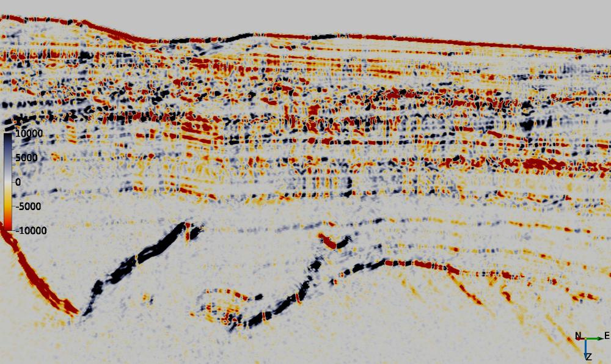
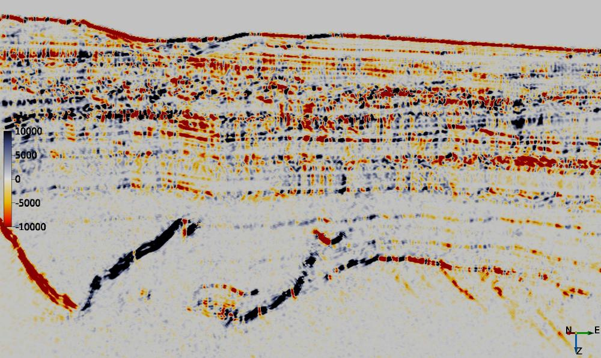

Description
This series of External Attributes are based around fitting a second order 3D polynomial to a region of data around each sample location using gaussian weighted least squares. For regularly sampled data the fit can be calculated very efficiently by convolution.
The approximation has the following form:
r0 + r1*x + r2*y + r3*z + r4*x^2 + r5*y^2 +r6*z^2 + r7*xy + r8*xz + r9*yz
where x (inline), y (crossline) and z (time/depth) are relative to the analysis location, ie the analysis location has x=y=z=0.
The first 2 attributes, LPA Smoothing and LPA Dip, have the most practical potential. The others provide access to intermediate results which were used for checking the accuracy of the calculations during development and may be of interest to the ultra-curious.
Input Parameters
All attributes have the same set of input parameters. The only difference is that some have a choice of output attribute.

| NAME | DESCRIPTION |
|---|---|
| Z window (+/-samples) | Specifies the extent of the analysis cube in the Z direction. Number of Z samples in cube will be 2*Z_window+1. |
| Stepout | Specifies the inline and crossline extent of the analysis cube. Number of samples in each direction will be 2*Stepout+1. |
| Weight Factor | Determines the extent of the gaussian weight function used in the weighted least squares approximation. The standard deviation of the gaussian weight function (sigma) is related to this value by sigma = min(2*Stepout, 2*Z_Window) * Weight_Factor. A value of 0.15 gives near zero weight for points at the smallest extent of the analysis cube. |
LPA Smoothing
This attribute calulates and outputs only the r0 term of the local polynomial approximation. This provides a smoother version of the input with relatively minor smearing of steep dips and fault cuts. Increasing either the Weight Factor or size of the analysis volume (StepOut or Z window) increases the amount of smoothing.
There are 2 versions of the attribute:
-
ex_lpa_smooth_scipy.py - which uses the 3D convolution routine in scipy.ndimage
-
ex_lpa_smooth.py - which uses the Numba JIT compiler to dramatically speed up the convolution. My own tests show a 3-4 times increase in throughput.


LPA Dip
This attribute (ex_lpa_dip.py) uses the local polynomial approximation coefficients to estimate an orientation tensor as per Farnebäck (2002) and assumes the orientation of the first eigenvector is normal to the local event dip. Output can be either the inline or crossline dip. The example shows inline dip on a crossline calculated using a 5x5x5 sample volume (Z_window: 2, Stepout: 2,2) with a subsequent 3x3x3 sample median filter applied to remove spurious dips. Only a Numba JIT compiler version of this attribute is provided.

LPA Coefficients
This attribute (ex_lpa_coef.py) outputs all of the local polynomial approximation coefficients. The r0 output is identical to the LPA Smoothing attribute. Only a Numba JIT compiler version of this attribute is provided. The example below shows the inline first and second derivative components on a crossline.
LPA Eigenvalues
This attribute (ex_lpa_eigenvals.py) uses the local polynomial approximation coefficients to estimate an orientation tensor as per Farnebäck (2002). Output are the eigenvalues (e1, e2, e3) of the tensor in descending order. Only a Numba JIT compiler version of this attribute is provided. The example below shows the first and second eignevalues on a crossline.


LPA Eigenvectors
This attribute (ex_lpa_eigenvec.py) uses the local polynomial approximation coefficients to estimate an orientation tensor as per Farnebäck (2002). Output are the eigenvectors (t1x,t1y,t1z,t2x,t2y,t2z,t3x,t3y,t3z) of the tensor. Eigenvector [t1x, t1y t1z] corresponds to the first eigenvalue, e1 etc. Only a Numba JIT compiler version of this attribute is provided.
 
